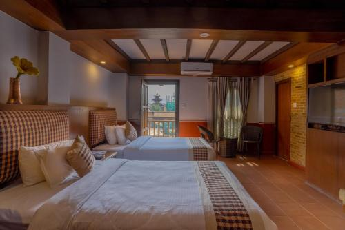
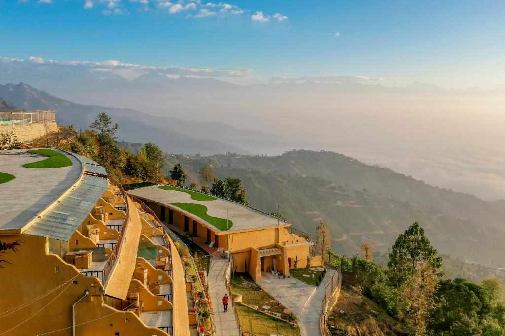
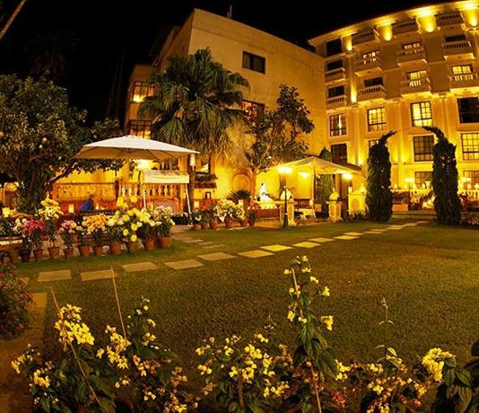
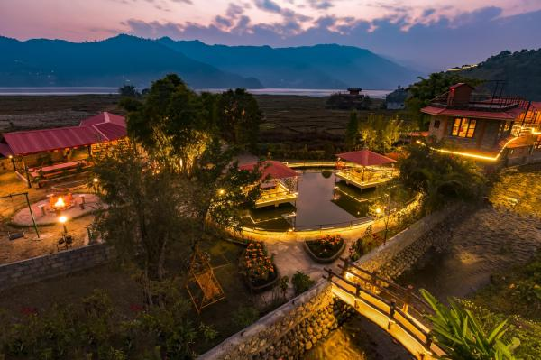
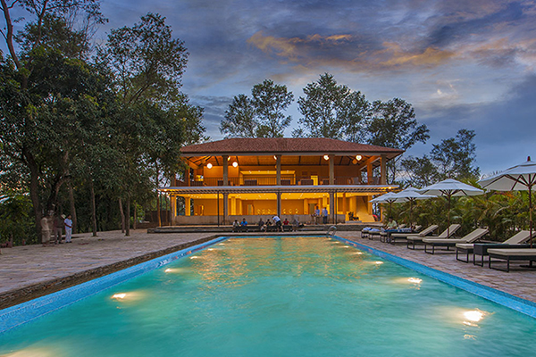
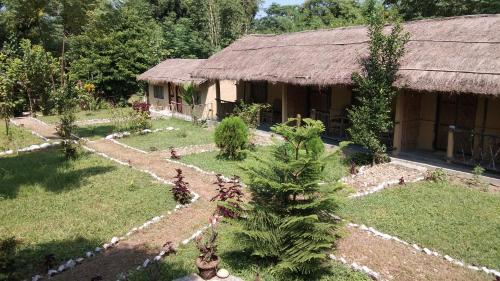
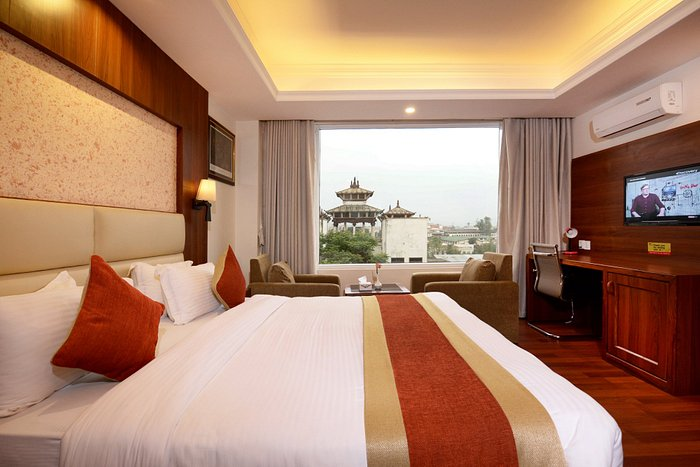
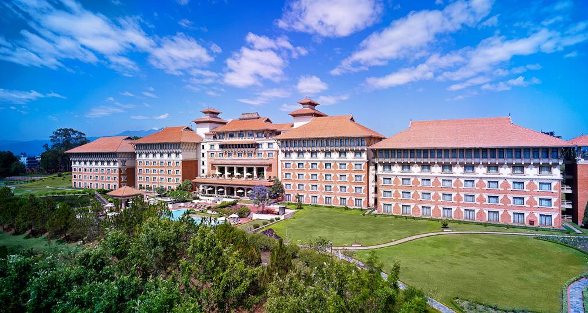

Pahan Chhen
Patan,Kathmandu
01-5450287
Pahan Chhen - Boutique Hotel offers lodging with a garden, free private parking, a shared lounge, and a terrace in Kathmandu, just steps from Patan Durbar Square. The 4-star hotel's rooms all have views of the city, and visitors have access to a restaurant and a bar. The hotel offers free Internet, complimentary airport transfers, room service, and a 24-hour front desk.
Air-conditioned rooms with a desk, a kettle, a safety deposit box, a flat-screen TV, and a private bathroom with a shower are available to visitors at the hotel. Some accommodations come with a minibar and a kitchen. Bed linens and towels are provided in each room at Pahan Chhen - Boutique Hotel.

Hotel Middel path & Spa
Pokhara
061-452812
The Hotel Middle Path & Spa provides tidy, pleasant accommodations with views that are only a 5-minute stroll from the lovely Phewa Lake. There is free WiFi connection available. The hotel is only a 10-minute drive from Pokhara Airport and a 10-minute drive from Pokhara Tourist Bus Station, with panoramic views of Pokhara's Mountains from the roof and a few rooms.
A desk, a seating area, and a TV or flat-screen with satellite channels are all included in air-conditioned rooms. Showers with hot and cold water are included in en suite bathrooms. Just stairs are available for entry to any room.
The front desk at Middle Path is open around-the-clock and can help with room service and storage for luggage. A tour desk may also help in making travel plans and providing free advice.The hotel's on-site restaurant will provide a variety of Chinese, Indian, and Nepalese dishes.

Hotel Agantuk
Banepa Municipality View Tower Marg Kavre - 6, Dhulikhel 45200 Nepal
023.45789
The Kathmandu Aagantuk Hotel offers air-conditioned rooms with free Internet, free private parking, and room service in the heart of Kathmandu. The building has a garden, a common room, a patio, and a garden. A 24-hour front desk, an ATM, and a currency exchange are available to guests at the lodging.
A dining area, a flat-screen TV with satellite channels, and a private bathroom with free amenities and a shower are included in each unit at the hotel. Each room has a kettle, and some have balconies or have views of the garden. All rooms are equipped with a kettle. Each room at the Kathmandu Aagantuk Hotel comes with towels and bed linens.There are buffet, continental, and American selections for breakfast every day. There is a restaurant on-site that serves American, Chinese, and British food. You may also ask for vegetarian, vegan, and gluten-free alternatives.
This three-star hotel offers bike rentals because riding is a common activity in the neighborhood.
Kathmandu Aagantuk Hotel is 1.9 kilometers from Hanuman Dhoka and 2.7 kilometers from Swayambhu. Tribhuvan International Airport is the closest airport, located 6 km from the hotel, and a chargeable airport shuttle service is provided by the establishment.
According to unbiased reports, this is the area of Kathmandu that visitors like the most.

Kathmandu Guest House
Saat ghumti marga
01-4700800
Affordable lodging is available at the Kathmandu Guest House, which is ideally situated in Thamel, a well-known tourist area. It offers complimentary private parking as well as an on-site restaurant. The use of WiFi is free anywhere. The international airport is serviced by a free airport pickup.
Tribhuvan Airport and Patan Durbar Plaza are both 7 kilometers from Kathmandu Guest House. The Kathmandu Durbar Square and a variety of restaurants are close to the hotel.

Zostel Hotel
Pokhara 18, Sedi Bagar, Lakeside
986-9273860
The Zostel Pokhara provides lodging with a garden, free private parking, a communal lounge, and a terrace in Pokhara, 2.2 kilometers from Pokhara Lakeside. This property's amenities include a restaurant, a front desk open around-the-clock, baggage storage, and free Internet all around the building. The bar serves drinks to visitors.
At the hostel, a wardrobe is provided in each room. Each accommodation at the Zostel Pokhara has a private bathroom with a shower, and some have a balcony. The accommodations include linens.
The hotel offers à la carte, continental, and vegetarian breakfast options.Devi's Waterfall is 6.8 kilometers away from the lodging, whereas Fewa Lake is 2.5 km away. Pokhara Airport, located 5 kilometers from Zostel Pokhara, is the closest airport.

Kesara Resort
varatpur,442200
Phone:980-1249337
The Kasara Resort is situated near Patihani, close to the boundaries of the UNESCO World Heritage Site that is Chitwan National Park. In this resort, WiFi is offered for free. There is a restaurant on the premises as well.
You will have a sitting space and air conditioning in the room. Furthermore, an electric kettle is present. Private bathrooms have a shower as well as a hairdryer and bathrobes. From the room, you can take in the garden view. A sofa, a desk, and bed linen are extras.
There is a front desk open around-the-clock, a garden, and a patio at Kasara Resort. There is free parking on the premises.
It is 2.6 kilometres to the Gharial Breeding Center. The airports at Pokhara and Bharatpur are 150 and 19 kilometers, respectively, away from this resort.

Chital Lodge
Chitwan
103-4532
The Chital Lodge offers accommodations with a garden, free private parking, a patio, and a restaurant in Chitwan, which is 40 miles from Tharu Culture Museum. There is a bar at this one-star motel. The hotel offers free Internet, free airport shuttle service, room service, and a 24-hour front desk.
Fishing is just one of the activities available to hotel guests in and around Chitwan.
Bharatpur Airport, which is 25 miles from Chital Lodge, is the closest airport.

kumari banquet hotel
Lalitpur,Kathmandu
056-445623
The Kumari Boutique Hotel is conveniently located in the heart of Kathmandu and offers air-conditioned rooms with free Internet, free on-site parking, and room service. The 3-star hotel's rooms all have city views, and visitors have access to a patio and a restaurant. The hotel provides its visitors with a front desk, an ATM, and currency exchange services.
A seating area, a flat-screen TV with satellite channels, a safety deposit box, and a private bathroom with a shower, complimentary amenities, and a hairdryer are features shared by all of the hotel's accommodations. Each room at the Kumari Boutique Hotel is furnished with towels and bed linens.
The resort offers a buffet, à la carte, or continental breakfast.
Using OpenStreetMap, the distance in the property description is determined.Hanuman Dhoka, Kathmandu Durbar Square, and Garden of Dreams are popular attractions in the area. The Kumari Boutique Hotel has a for-hire airport shuttle service, and Tribhuvan International Airport is the closest airport, located 5 km away.
According to unbiased reports, this is the area of Kathmandu that visitors like the most.
Couples in particular enjoy the area; they gave it a 9.3 rating for a trip with a partner.
From 25 February 2018, Kumari Boutique Hotel has welcomed Booking.com visitors.

Hyatt Regency Kathmandu Hotel
Thamel,Kathmandu
012-3343444
The Hyatt Regency Kathmandu, which has a 24-hour front desk and a sizable outdoor pool, is approximately 1.3 miles from the well-known Boudhanath Stupa, a designated UNESCO World Heritage site.
Seven kilometers separate the property from Thamel, a well-known tourist attraction. The distance to Kathmandu International Airport is 4 kilometers.
There is a spa, a fitness center, and a steam & sauna room available at the Hyatt Regency Kathmandu. They are complemented with a massage facility and a lovely garden. At the tour desk, visitors may also get advice with their trip plans.
In addition to having heating options, air-conditioned rooms are furnished with a desk, closet, electronic safe, seating area, minibar, and satellite TV. The bathrooms with en suites come with free toiletries.The Rox Restaurant, which serves food with South European flavors, is one dining choice. Local and international cuisines are available in the café. The Rox Bar and The Lounge both provide refreshing drinks. Throughout the day, alternatives for room service are available.